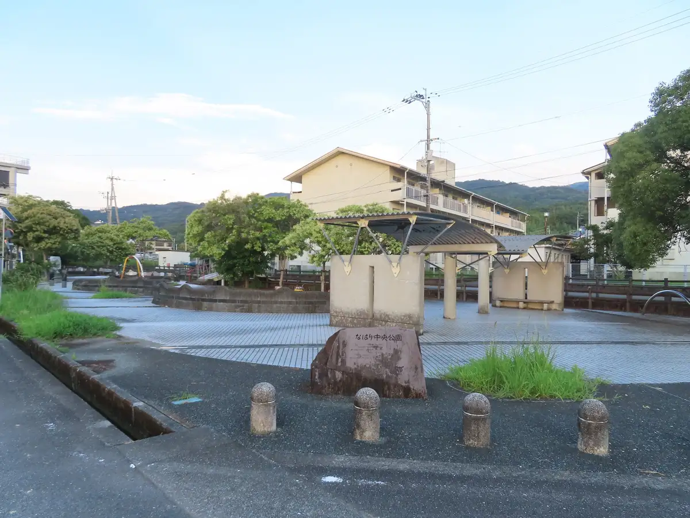
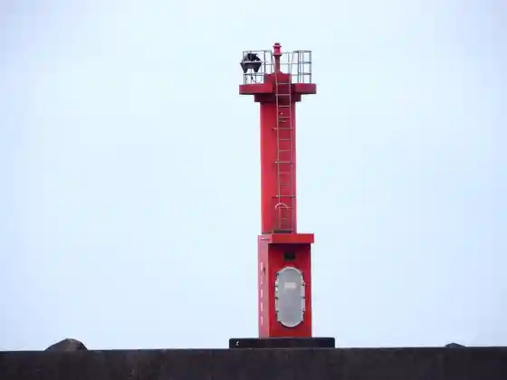
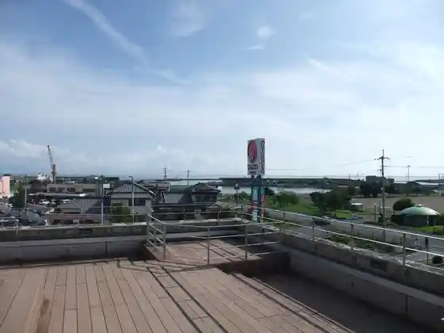

Nahari
Nahari · Kochi
Nahari
Highlighted on the Kochi map.

Stay
Hotel Nahari
Dining
Shoppu Yoshida
Doraibuin Nagisa
Warai Fuku
Rakuen
Buta Fukutei
Itaria Shokudo Ton no
Ha Botan
Nagato Sushi Kappo
Kui Mo no Ya Go
Hotel Nahari Resutoran
Sights
Nahari Chuo Park
Karyogo Lighthouse

Nahari Kabuto
Nahari Minato Chobo

Nahari Eki
Nahari Town Hall
Nahari Tetsudo Hashi